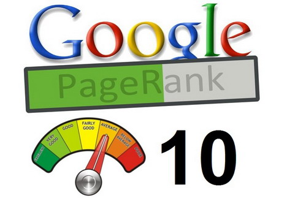
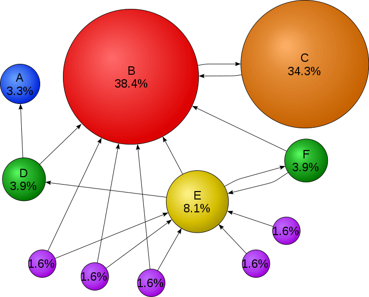

PageRank!!!
What is PageRank?
PageRank was developed in 1998 by Google's founders Sergey Brin and Larry Page, it is used by many search engines including Google to rank web pages. PageRank provides a method to determine the value of a website for any given search term or keyword phrase. This value is determined by how websites link together with the more popular sites receiving more links.
Crawling and Indexing
What is Crawling?
Crawling is the process of fetching all the web pages linked with a website. This is performed by a program called crawler. These are also known as spiders or bots, they visit websites and send information to their parent website
What is Indexing?
Indexing is the process of creating index for all the fetched web pages and keeping them into a huge database where they can later be retreived such as a search engine database. If a website is not in a search engine's index, users will not be able to find it using that search engine.
PageRank algorithm
This graph is an example of PageRank and shows the pages as vertices and the links as edges. The percentage on each vertex shows the rank, the highest percentage is the highest ranking.
PR = PageRank of Page
C(tn) = Inbound links from Page(T)
d = Damping Factor
PR(A) = (1– d) + d(PR(t1)/C(t1) + ... + PR(tn)/C(tn))
What is the Damping factor
The damping factor is used to limit the influence of the PageRank / Inbount Links part of the algorithm
Factors of page rank
Factors which affect the page rank score include:
- The number of web pages that link to the target page
- Links to high-ranking web pages score more than those to low-ranking web pages.
- Pages with lots of links add less to the score than those with few links.
- The time that the web page has been in existence also adds to the score; more established sites score more highly than recently published sites.